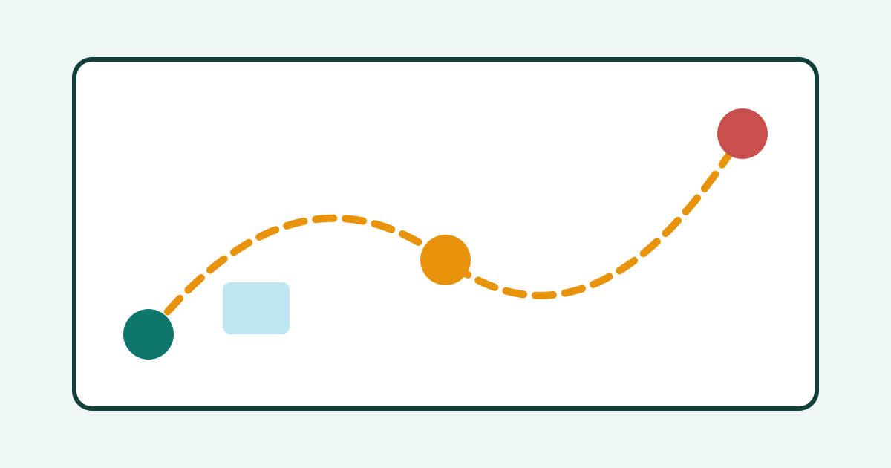

How to Save Time on Everyday Errands

Errands can quietly take over a day. A quick trip to the shop becomes two trips, a simple visit to an office turns into a long wait, and small jobs scattered across the week leave little time for anything else. Saving time on errands is not about rushing. It is about planning, grouping tasks, and preparing well, so each trip is shorter and more useful. With a few simple habits, you can finish the same errands in much less time.
Keep One Running Errands List
Start with a single list for all errands, kept in one place, such as a notebook or a phone note. Whenever a new errand appears, add it to the list right away, with enough detail to act on it later. Instead of “shop,” write “buy milk, bread, and cleaning spray.” Instead of “post office,” write “send the parcel to the address on the desk.” Clear details save time later, because you do not need to remember or search for information.
Review the list once a day, or once in the morning, and move items you can do today to a short “today” list. Remove items that are no longer needed, and keep the main list tidy. A single, updated list prevents forgotten errands, duplicate trips, and the feeling that tasks are hiding in different places. It also helps you see which errands can be done together.
Group Errands by Place and Route
Grouping is the most powerful way to save time. Instead of making a separate trip for each errand, group errands that are near each other or on the same route. For example, visit the shop, the pharmacy, and the post office in one trip if they are in the same area. Plan the route in a sensible order, starting with the place that closes earliest or has the longest wait.
Choose one or two errand days or errand times each week, if your schedule allows it. A dedicated errand block stops small jobs from interrupting work or study throughout the week. Within that block, work through your grouped list in order, and tick off each item as you finish it. If an errand cannot be grouped, ask whether it can wait until the next grouped trip, rather than making a special journey for it alone.
Choose Better Times and Prepare Before You Go
Timing can make a large difference. Shops, offices, and services are often quieter early in the morning, midweek, or outside peak hours. If you can choose your time, pick a quieter period to avoid long queues and crowded parking. For appointments or visits that may involve waiting, bring something useful to do, such as reading or reviewing notes, so waiting time is not wasted.
Preparation also saves time at each stop. Before you leave, check that you have everything you need: payment, identification, forms, parcels, bags, and your list. Put items in one bag by the door, so you do not need to search the house. If an errand needs a form or document, prepare it the night before. Arriving prepared often turns a long visit into a short one.
Use Simple Shortcuts and Standard Lists
Standard lists save repeated thinking. Keep a basic shopping list for items you buy often, and copy it each time instead of starting from nothing. Keep a packing or preparation checklist for regular trips, such as a weekly market visit or a visit to an office. These lists reduce forgotten items, which are a common cause of second trips.
Use services that genuinely save time, when they suit your needs, such as ordering in advance for pickup, booking an appointment instead of waiting in line, or using delivery for heavy or routine items. Compare the time saved with any extra cost, and choose only the options that clearly help. The goal is not to use every service, but to use the few that remove the most wasted time from your week.
Common Mistakes
One common mistake is going out without a list and relying on memory. Memory often fails under time pressure, and forgotten items lead to repeat trips. Another mistake is making many small, unplanned trips across the week. Each trip has travel and preparation time, so several small trips cost far more time than one grouped trip.
Many people also leave errands until the last moment, when queues are longest and options are limited. Planning a day or two ahead gives you more choice of times and less stress. Finally, avoid adding new errands during a trip without checking your route. A small detour can be useful, but repeated detours can turn a short trip into a long one. Keep the plan clear, and add new items to the list for the next grouped trip unless they are truly urgent.
Frequently Asked Questions
How often should I do errands?
Once or twice a week works well for many people, depending on your needs. Grouping errands into fewer trips saves travel time. Fresh items or urgent tasks may need an extra trip, but most routine errands can wait for the next grouped outing.
What should I do if I forget something on a trip?
Add it to your list immediately for the next trip, unless it is truly urgent. Making a special trip for one forgotten item often costs more time than waiting. A clear list and a quick check before leaving will reduce forgotten items over time.
Should I do errands in the morning or evening?
Choose the time that is quietest and fits your schedule. Early mornings and midweek periods are often quieter, while evenings can be crowded. Try different times for a week or two and keep the time that works best for your area and routine.
How can I make errands less tiring?
Keep trips short, group them well, and prepare everything in advance. Take water, wear comfortable shoes for walking trips, and avoid packing too many distant stops into one outing. A calm, planned trip feels much easier than a rushed, unplanned one.
Conclusion
Saving time on errands comes down to a few repeatable habits: keep one running list, group errands by place and route, choose quieter times, prepare before you leave, and use standard lists for routine jobs. You will make fewer trips, forget fewer items, and finish faster. Try grouping your errands for one week, and notice how much time you gain for the things that matter more.